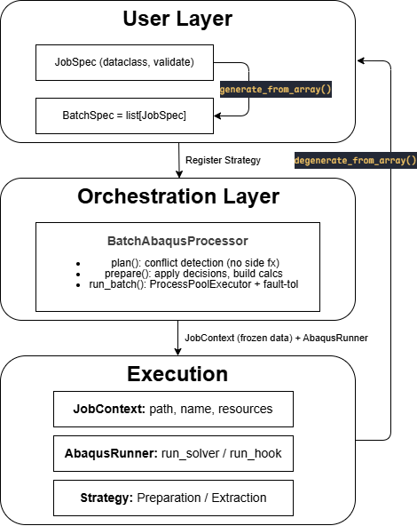

ABQ-FLOW¶
基于 python 的适用于 Abaqus FEA 的模块化批处理框架。
基于策略的批量化运行工作流，支持多类型批量脚本(包括基于修改inp类、基于直接生成cae/inp类)，实现容错、并行执行、资源感知调度等 —— 统一Abaqus CAE的批量仿真工作流


English | 简体中文
功能特性¶
⚒️ 基于策略模式的工作流：将模型准备、结果提取以及仿真过程组合为可复用的流水线。
📗 类型化配置：基于
JobSpec数据类进行配置，在任务执行前完成参数校验，避免运行过程中出现隐蔽的KeyError。🔒 容错并行执行：采用
ProcessPoolExecutor与JobOutcome封装执行结果，单个任务失败不会导致整个批处理终止。💻 易于扩展：无需修改框架源码即可注册并使用自定义的 Preparation Strategy。
系统架构¶

安装¶
使用 Pixi：
pixi add --pypi "ABQflow @ git+https://github.com/Yutu0k/ABQflow.git"
Abaqus（确保命令
abaqus已加入系统PATH）Python ≥ 3.9
abqpy(可选): 安装abqpy后，可以直接使用普通python解释器运行脚本，而无需调用 Abaqus 自带的 Python 环境。
如何使用？¶
单个参数化任务（Single Parameterized Job）¶
下面的示例展示了如何定义并运行一个参数化 Abaqus 仿真任务
from ABQflow import BatchAbaqusProcessor, JobSpec, PreparationSpec, HookSpec
spec = JobSpec(
job_name = "planar_stress",
workflow = "modular",
preparation = PreparationSpec(
kind = "inp_based",
source_path = "./examples/SingleParameterizedJob/cae_file/planar_stress_template.inp",
params = {
"youngs_modulus": 210000,
"load_magnitude": 2000,
}
),
post_extraction = [
HookSpec(
script_path = "./examples/SingleParameterizedJob/cae_file/get_max_stress_mises.py",
tasks = [
{"result_name": "max_stress_mises",},
{"result_name": "max_displacement",},
]
)
]
)
processor = BatchAbaqusProcessor(
batch_data = [spec],
base_output_dir = ("./examples/SingleParameterizedJob/output"),
cpus_per_job = 4,
duplicate_mode = "overwrite",
)
outcomes = processor.run_batch(num_parallel_jobs=1)
for oc in outcomes:
print(f"{oc.job_name}: {oc.status} → {oc.results}")
批量参数化任务（Batch Parameterized Job）¶
当需要针对多组参数进行批量仿真时，可以先定义一个Base Job，然后根据参数数组自动生成多个 JobSpec。
import numpy as np
from ABQflow import BatchAbaqusProcessor, JobSpec, PreparationSpec, HookSpec
from ABQflow import generate_from_array, degenerate_from_array
param_names = ['youngs_modulus', 'load_magnitude']
param_values = np.array([
[200000, 2000],
[210000, 3000],
[220000, 4000],
[230000, 5000]
])
base_job_spec = JobSpec(
job_name = "planar_stress_batch",
workflow = "modular",
preparation = PreparationSpec(
kind = "inp_based",
source_path = "./examples/BatchParameterizedJob/cae_file/planar_stress_template.inp",
),
pre_extraction = [
HookSpec(
script_path = "./examples/BatchParameterizedJob/cae_file/get_total_mass.py",
tasks = [
{"result_name": "total_mass",},
]
)
],
post_extraction = [
HookSpec(
script_path = "./examples/BatchParameterizedJob/cae_file/get_max_stress_mises.py",
tasks = [
{"result_name": "max_stress_mises",},
{"result_name": "max_displacement",},
]
)
]
)
spec_list = generate_from_array(
samples_array = param_values,
param_names = param_names,
base_spec = base_job_spec
)
proc = BatchAbaqusProcessor(specs, './output', cpus_per_job=4)
outcomes = proc.run_batch(num_parallel_jobs=2)
# Get a 2D numpy array of results
arr = degenerate_from_array(outcomes = outcomes, output_names = ["total_mass", "max_stress_mises", "max_displacement"])
print(arr) # shape (4, 3)
整体式脚本（Monolithic Script）¶
TODO
Hook 脚本¶
Hook 脚本用于在仿真前后执行自定义逻辑(例如提取结果、计算派生指标等)。编写结果提取时，请遵循以下约定：
Hook 脚本由 Abaqus 自带的 Python 解释器执行。 因此，请避免导入除 Python 标准库之外的第三方库（除 Abaqus 自身提供的模块外）。
提取结果必须按照指定格式输出。 请使用
sys.__stdout__.write()（或与框架约定的输出流）输出结果，并包含以下标记(===ABQ_RESULT_BEGIN===,===ABQ_RESULT_END===)。ABQflow将自动解析这两个标记之间的 JSON 数据。脚本可以单独进行调试。 若提取过程失败，可使用下面的命令直接运行 Hook 脚本：
python extraction_script.py --result_path path_to_result --tasks_json path_to_json_for_job
示例¶
# my_extract.py
import argparse, sys, json
from odbAccess import openOdb
def extract_from_odb(args):
try:
with open(tasks_json_path, 'r', encoding='utf-8') as f:
task_list = json.load(f)
odb = openOdb(args.odb_path)
results = {}
for task in task_list:
name = task['result_name']
try:
results[name] = 123.45 # 在此实现自己的提取逻辑
except Exception:
results[name] = None
odb.close()
sys.__stdout__.write(
f"===ABQ_RESULT_BEGIN===\n"
f"{json.dumps(results)}\n"
f"===ABQ_RESULT_END===\n"
)
except Exception as e:
sys.__stderr__.write(f"Fatal error in my_extract.py: {e}\n")
sys.exit(1)
if __name__ == "__main__":
parser = argparse.ArgumentParser()
parser.add_argument('--odb_path', required=True)
parser.add_argument('--tasks_json', required=True)
args, unknown = parser.parse_known_args()
extract_from_odb(args)
Abaqus License Token 并行规划¶
ABQflow 内置了 Abaqus License Token 计算与并行规划工具，可根据 CPU 数量自动估算所需的 Token 数，并结合机器资源确定可同时运行的任务数量。
from abaqus_batch_pack import solver_tokens, plan_parallelism
# 4 个 CPU 所需的 Token 数：
# ceil(5 * 4^0.422) = 9
print(solver_tokens(4)) # → 9
# 在一台 16 核机器上，每个任务使用 4 个 CPU，
# 当请求同时运行 8 个任务时，实际允许的最大并行任务数：
print(plan_parallelism(requested=8, cpus_per_job=4)) # → 3
Abaqus 官方推荐的 Token 计算公式为：
T(n) = ⌈5 × n^0.422⌉
其中：
n表示每个任务使用的 CPU 核数；T(n)表示对应需要占用的 Abaqus License Token 数量。
框架会综合考虑用户请求的并行任务数、每个任务所需 CPU 数、当前机器可用 CPU 数和Abaqus License Token 数量，自动规划最终能够安全运行的最大并行任务数，避免由于资源不足导致任务失败。
License¶
本项目采用 MIT License 开源协议。
更多信息请参阅：LICENSE